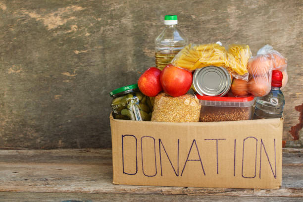
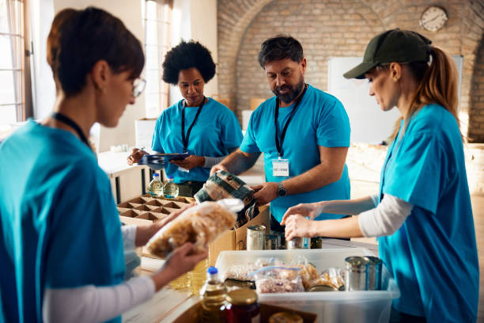
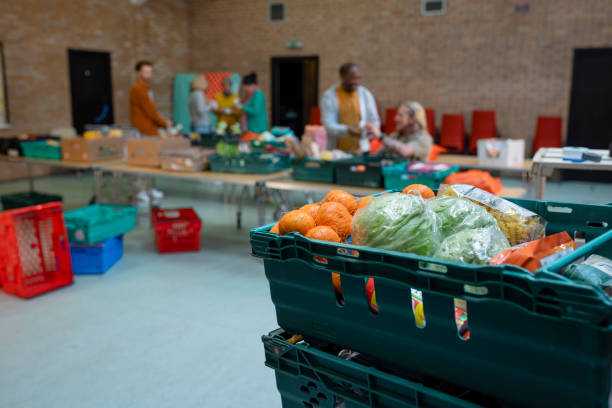
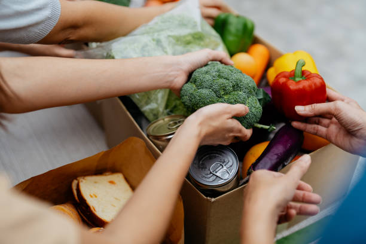

PROJETOS
Ideias que alimentam um futuro melhor
Nossos projetos são pensados pra ir além da
doação de alimentos. Eles buscam promover
dignidade, saúde e oportunidades para as
famílias em situação de vulnerabilidade.

Nossas iniciativas
Projetos em andamento
Conheça as principais iniciativas do Banco de Alimentos e veja como
elas fazem a diferença na vida de muitas pessoas.

Cestas Sólidarias
Arrecadação e distribuição de cestas
básicas para familias em situação
de vulnerabilidade.

Combate ao Desperdício
Coleta de alimentos que seriam
descartados, mas ainda estão
próprios para o consumo.

Educação Alimentar
Conscientização sobre alimentação
saúdavel, aproveitamento dos alimentos
e redução do desperdício.
QUER FAZER PARTE?
Juntos, podemos ir mais longe.
Seja doando, se voluntariando
ou divulgando o nosso trabalho.
Cada gesto conta!